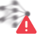
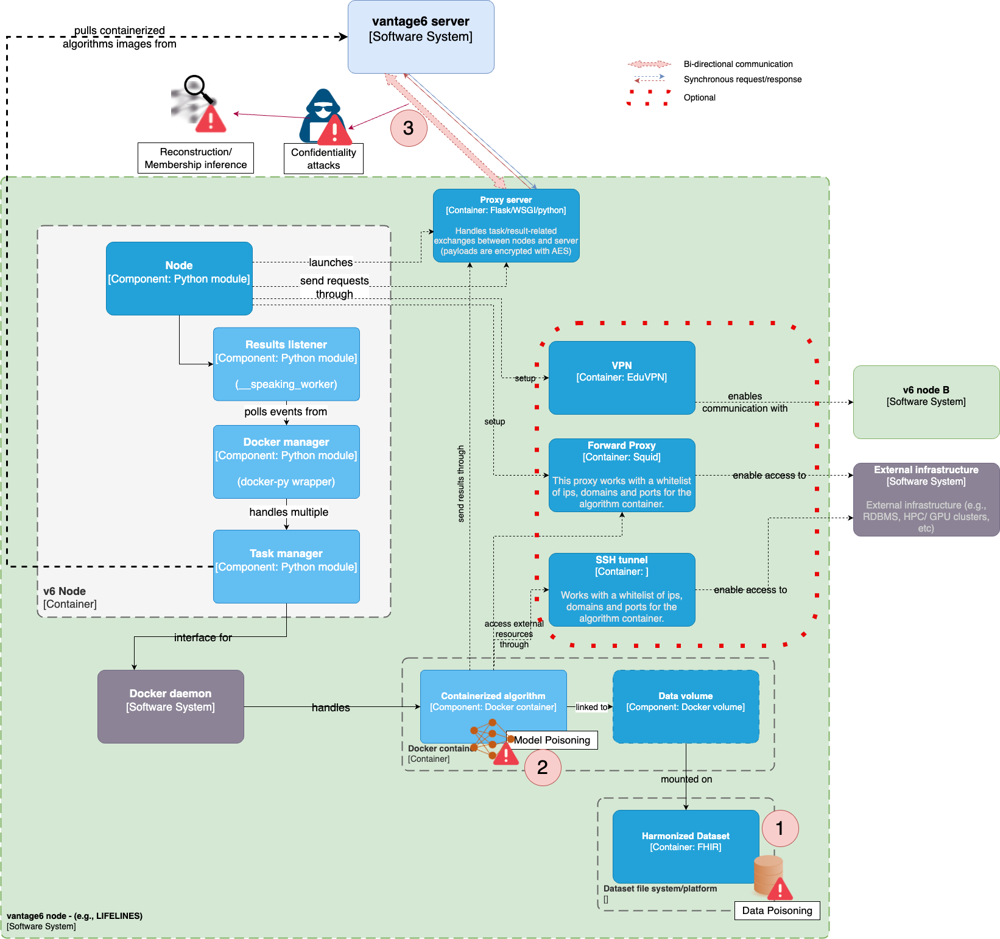
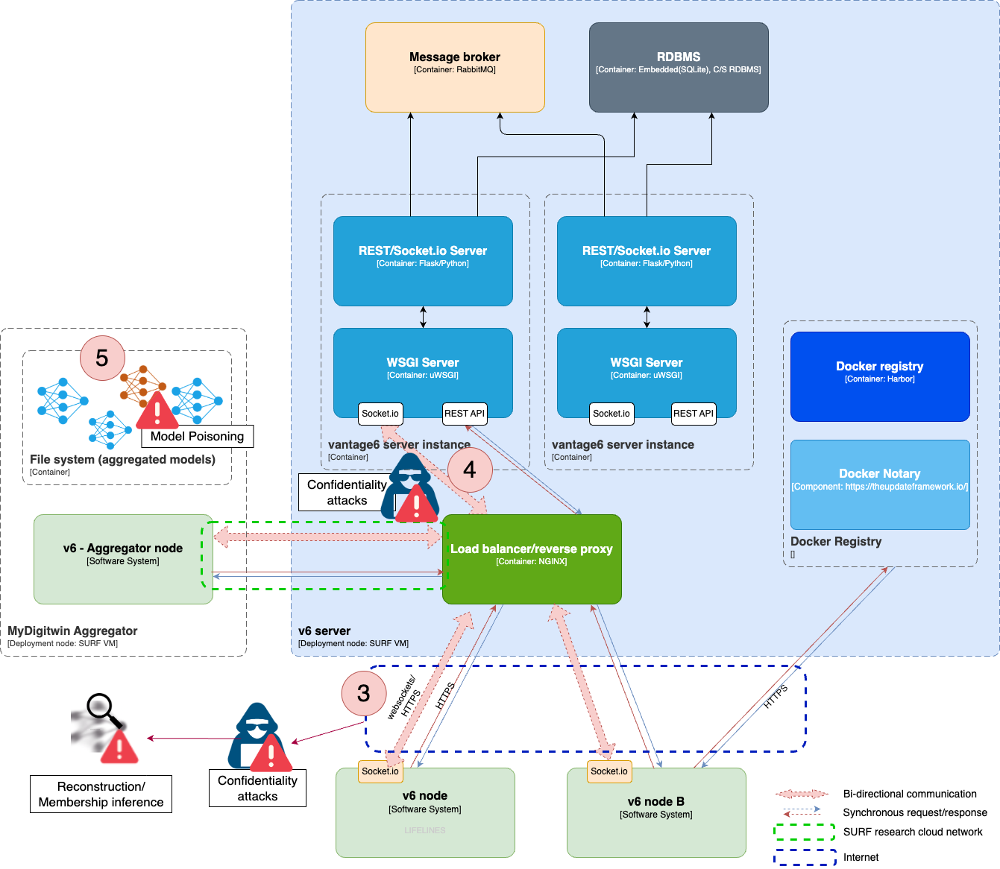

Risks and Technical Debts
Security risks
In this section, we identify technical security risks associated to the MyDigiTwin architecture, and measures to control them. These measures serve as a guideline of best practices to be considered for each one of the parties involved in the project.
AI model-related security risks
| ID | Risk | Symbol | Description | Measures | References |
|---|---|---|---|---|---|
| R1 | Confidentiality attacks | [1] | |||
| R1.1 | Privacy risks | Leakage, misuse and abuse of training data is a long-standing privacy risk in machine learning. This risk is exacerbated when the training data is provided by multiple parties, which, in conventional ML approaches, requires disclosing said data in a single place. | FL, SMC | [1] | |
| R1.2 | Eavesdropping | The unauthorized interception of communication between two devices. In the context of AI, it is related to the exposure of sensitive data in distributed machine learning (federeated learning, SMC). | Secure communication protocols, MFA, DP | [1][4] | |
| R2 | Poisoning attacks | [1] | |||
| R2.1 | Data poisoning | A malicious participant in a federated learning process intentionally introduces biased or corrupted data to manipulate the model's performance. R7 | DP, HME | [1][2][3][4] | |
| R2.2 | Model poisoning | Occurs when a malicious participant in the federated learning process intentionally introduces biased or corrupted data to manipulate the model's performance.R5 | Secure communication protocols, cryptographic techniques | [1][3][4] | |
| R3 | Inference attacks | ||||
| R3.1 | Reconstruction |  | Reconstructing or inferring sensitive or private information using only publicly available data, e.g., public aggregate statistics about the dataset. | DP, Robust Aggregation Algorithms | [1][3][4] |
| R3.2 | Model inversion | An attacker tries to reconstruct the training data of a machine learning model from its predictions. | DP, HME | [3][4] | |
| R3.3 | Membership inference | An attacker tries to determine whether a given data sample was part of the training data for a machine learning model. In the healthcare context these attacks could disclose, for example, the medical condition of a given patient. | DP, HME, Regularisation, Training data reduction | [1][4] | |
| R3.4 | Backdoor attack | An attacker insert hidden triggers in the global model (e.g. by poisoning the data or the model). The compromised model would function as expected with standard input. However, a very specific one would trigger a biased or malocious intentional output. | DP | [1][2][3][4] | |
| R3.5 | Generative Adverserial Networks (GAN) | A machine learning model that can be used to generate synthetic data that resembles the real one. GANs can be used to craft inputs aimed at tricking the model for the attacker to understand its behavior and vulnerabilities. This understanding could enable, for example, inferring membership in the training dataset. R3.3 | SMC,DP,TEE,HME | [1][2][3][4][6] |
Measures description & application
Federated learning and Secure Multi-Party Computation
Federated Learning and Multi-Party Computation are two techniques used to enhance privacy and security in machine learning systems, particularly in scenarios where data is distributed across multiple parties. Federated Learning is a machine learning approach that allows a model to be trained with multiple datasets, in a way that each dataset never leave its host. Instead, only ecrypted aggregated results are exchanged. Secure Multi-Party Computation (SMC), on the other hand, allows multiple parties to compute a function over their inputs while keeping those inputs private.
Differential Privacy:
Differential Privacy (DP) is a privacy-preserving technique that adds noise to the data or the model updates to prevent the identification of individual data points. This can help to prevent the compromise of individual data even if the source data itself is compromised.
Homo-morphic Encryption:
Homo-morphic Encryption (HME) is a method that allows computations to be performed on encrypted data without descrypting it. The results, when decrypted, matches the result of operations as if these were performed on the original data. In federated learning, it allows computations to be performed on encrypted data without revealing the data to the involved parties.
Secure Communication Protocols:
Secure communication protocols ensure that data transmitted between parties is secure and cannot be intercepted or modified. In federated learning, secure communication protocols can be used to ensure that the model updates are transmitted securely between the involved parties (client, server, nodes).
Robust Aggregation Algorithms:
Robust aggregation algorithms are methods used to combine the model updates from multiple clients in a way that is resistant to malicious updates. In federated learning, robust aggregation algorithms can help to ensure the integrity of the global model and resist backdoor attacks.
TEE - Trusted Execution Environment:
A Trusted Execution Environment (TEE) is a secure area of a main processor where sensitive computations can be performed. In federated learning, a TEE can be used to ensure that the computations performed on the local data are secure and cannot be tampered with.
Risks in the context of MyDigiTwin v6-supported architecture
The core element of the research environment envisioned for MyDigiTwin is a privacy-preserving federated learning architecture, as described on the building block's section. The following ellaborates on the areas where the risks previously described pose potential threats or vulnerabilities.
Risk targets - vantage6 node

Risk targets - vantage6 server

MyDigiTwin Security measures
| Measure | Accountable party | Description | References |
|---|---|---|---|
| Federated learning, SMC | vantage6 core | Vantage6 allows the implementation of both Federated Learning or SMC algorithms. The selection of which approach to follow would depend on the agreements between the involved parties and the desired machine learning or data analysis application. | |
| Differential privacy | v6 node-infrastructure admin, algorithm developer | DP-noise should be added to the data after it is harmonized before enabling access to it to any algorithm (to ensure data points cannot be exposed during local analysis). To prevent gradients leakage, on the other hand, the federated algorithm running on the node, should add DP-noise to the model updates to be sent to the server and to the aggregator. The v6 node-infrastructure admin is responsible for checking these practices within the algorithms before enabling them on the policies configuration file. | |
| Secure communication protocols | v6-node admin, v6-server admin | To prevent eavesdropping attacks, the first measures involve the server admin enabling the use of vantage6 REST API through HTTPS (See #3 in the diagrams). This ensures secure communication between the server and clients by encrypting the data transmitted over the network. Additionally, digital certificates should be used to authenticate the server's identity. Furthermore, to prevent a potential attacker within the vantage6 server (See #4) to get partial or aggregated results from the data sent between users(researchers) and nodes, all the nodes should enable v6's AES end-to-end encryption feature. | |
| HME | node infrastrucrure admins, vantage6 node installer | The end-to-end encryption features previously described would prevent an attacker to get partial results or aggregated data, even if they get access to the v6-server. However, in a federated learning algorithm the aggregator node would still get access to these unencrypted individual pieces of data. This makes this party prone, for example, to membership inference attacks. As homomorphic encryption allows computations to be performed on encrypted data without decrypting it, it could be used when the aggregator node is not a trusted party, or, in general, when inference attacks want to be prevented on the aggregator. Backdoor attacks, particularly the ones based on the injection of malicious model updates (through data or model poisoning -see #5), would also be mitigated with HME. This kind of attacks need very specific model updates to make the global model to behave in the way desired by the adversary, which wouldn't make it to the final model as these would be encrypted. To this end, the algorithms should be created in a way that each party encrypts its model updates using homomorphic encryption techniques. | |
| Robust Aggregation Algorithms | Algorithm developer | When used as part of the federated learning strategy, non-robust aggregation algorithms would allow updates that significantly deviate from the real ones, introducing significant error on the global model, e.g., through model poisoning (see #2) or data poisoning (see #1). Algorithm developer should include a robust aggregation algorithm that mitigates poisoning attacks, for example, by considering only the most representative model updates (e.g., byzantine-robust aggregation methods). | [4] |
References
[1] Mothukuri, Viraaji, et al. "A survey on security and privacy of federated learning." Future Generation Computer Systems 115 (2021): 619-640.
[2] Li, Hao, et al. "Review on security of federated learning and its application in healthcare." Future Generation Computer Systems 144 (2023): 271-290.
[3] Sikandar, Hira Shahzadi, et al. "A Detailed Survey on Federated Learning Attacks and Defenses." Electronics 12.2 (2023): 260.
[4] Liu, P., Xu, X. & Wang, W. Threats, attacks and defenses to federated learning: issues, taxonomy and perspectives. Cybersecurity 5, 4 (2022). https://doi.org/10.1186/s42400-021-00105-6
[5] OWASP AI Security and Privacy Guide - https://owasp.org/www-project-ai-security-and-privacy-guide/
[6] Data Protection Impact Assessment (DPIA) for vantage6